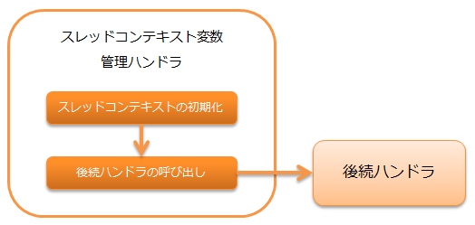

スレッドコンテキスト変数管理ハンドラ¶
目次
スレッドコンテキストの各属性値について、リクエスト毎に初期化処理を行うハンドラ。
スレッドコンテキストとは、リクエストIDやユーザIDなど、 同一の処理スレッド内で共有する値をスレッドローカル領域上に保持するための仕組みである。
重要
本ハンドラで設定したスレッドローカル上の値は、 スレッドコンテキスト変数削除ハンドラ を使用して、復路処理で削除すること。 往路処理にて本ハンドラより手前のハンドラでスレッドコンテキストにアクセスした場合、 値を取得できないため本ハンドラより手前ではスレッドコンテキストにアクセスしないよう注意すること。
補足
スレッドコンテキストの属性値の多くは、本ハンドラによって設定されるが、 本ハンドラ以外のハンドラや業務アクションから任意の変数を設定可能である。
本ハンドラでは、以下の処理を行う。
処理の流れは以下のとおり。
モジュール一覧¶
<dependency>
<groupId>com.nablarch.framework</groupId>
<artifactId>nablarch-fw</artifactId>
</dependency>
<!-- 国際化対応により、言語やタイムゾーンを選択できる画面を作る場合のみ -->
<dependency>
<groupId>com.nablarch.framework</groupId>
<artifactId>nablarch-fw-web</artifactId>
</dependency>
リクエスト毎にスレッドコンテキストの初期化を行う¶
スレッドコンテキストの初期化は、 ThreadContextAttributeインタフェース を実装したクラスを使用して行う。
デフォルトで以下のクラスを提供している。
- リクエストID、内部リクエストID
| [1] | 認可チェックハンドラ や サービス提供可否チェックハンドラ のような、内部リクエストIDに対する処理を実施するハンドラを使用する場合に設定する。 |
- ユーザID
- 言語
- タイムゾーン
- 実行時ID
これらのクラスは、コンポーネント設定ファイルに定義を追加して使用する。
<component class="nablarch.common.handler.threadcontext.ThreadContextHandler">
<property name="attributes">
<list>
<!-- リクエストID -->
<component class="nablarch.common.handler.threadcontext.RequestIdAttribute" />
<!-- 内部リクエストID -->
<component class="nablarch.common.handler.threadcontext.InternalRequestIdAttribute" />
<!-- ユーザID -->
<component class="nablarch.common.handler.threadcontext.UserIdAttribute">
<property name="sessionKey" value="user.id" />
<property name="anonymousId" value="guest" />
</component>
<!-- 言語 -->
<component class="nablarch.common.handler.threadcontext.LanguageAttribute">
<property name="defaultLanguage" value="ja" />
</component>
<!-- タイムゾーン -->
<component class="nablarch.common.handler.threadcontext.TimeZoneAttribute">
<property name="defaultTimeZone" value="Asia/Tokyo" />
</component>
<!-- 実行時ID -->
<component class="nablarch.common.handler.threadcontext.ExecutionIdAttribute" />
</list>
</property>
</component>
ユーザIDを設定する¶
UserIdAttributeInSessionStore は、デフォルトではセッションストアからユーザIDを取得する。 セッションストアへの設定はフレームワークでは実施しないため、ログイン時などにアプリケーションで設定する必要がある。 セッションストアに設定する際のキーはデフォルトでは”user.id”が使用される。 上書きする場合は、 UserIdAttribute#sessionKey に値を設定する。 “login_id”に上書きする例を以下に示す。
<component name="threadContextHandler" class="nablarch.common.handler.threadcontext.ThreadContextHandler">
<property name="attributes">
<list>
<!-- ユーザID -->
<component class="nablarch.common.web.handler.threadcontext.UserIdAttributeInSessionStore">
<property name="sessionKey" value="login_id"/>
<property name="anonymousId" value="${nablarch.userIdAttribute.anonymousId}"/>
</component>
<!-- その他のコンポーネント定義は省略 -->
</list>
</property>
</component>
デフォルトのキーでセッションストアにユーザIDを設定する実装例を以下に示す。
SessionUtil.put(context, "user.id", userId);
また、セッションストアに直接ユーザIDを格納するのではなく、ログイン情報をまとめて格納したいといった要件が考えられる。 その場合は以下のように UserIdAttribute#getUserIdSession をオーバーライドすることで任意の取得元からユーザIDを取得することが可能となる。 “userContext”というキーでセッションストアに設定したオブジェクトからユーザIDを取得する場合の実装例を以下に示す。 下記の場合も、アプリケーションでセッションストアへオブジェクトを設定する必要がある。
public class SessionStoreUserIdAttribute extends UserIdAttribute {
@Override
protected Object getUserIdSession(ExecutionContext ctx, String skey) {
LoginUserPrincipal userContext = SessionUtil.orNull(ctx, "userContext");
if (userContext == null) {
return null;
}
return String.valueOf(userContext.getUserId());
}
}
<component class="nablarch.common.handler.threadcontext.ThreadContextHandler">
<property name="attributes">
<list>
<!-- ユーザID -->
<component class="com.nablarch.example.proman.web.common.handler.threadcontext.SessionStoreUserIdAttribute">
<property name="anonymousId" value="${nablarch.userIdAttribute.anonymousId}"/>
</component>
<!-- その他のコンポーネント定義は省略 -->
</list>
</property>
</component>
スレッドコンテキストの属性値を設定/取得する¶
スレッドコンテキストへのアクセスは、 ThreadContext を使用する。
// リクエストIDの取得
String requestId = ThreadContext.getRequestId();
ユーザが言語を選択する画面を作る¶
国際化対応などで、ユーザが言語を選択できることが求められることがある。 このような場合、以下のクラスのいずれかと LanguageAttributeInHttpUtil を使うことで、ユーザの言語選択を実現できる。
ここでは、クッキーに言語を保持し、リンクにより言語を選択させる画面の実装例を示す。
- 設定例
<!-- LanguageAttributeInHttpUtilを使用するため、 コンポーネント名を"languageAttribute"にする。--> <component name="languageAttribute" class="nablarch.common.web.handler.threadcontext.LanguageAttributeInHttpCookie"> <property name="defaultLanguage" value="ja" /> <property name="supportedLanguages" value="ja,en" /> </component>
- JSPの実装例
<%-- n:submitLinkタグを使用しリンクを出力し n:paramタグを使用しリンク毎に別々の言語を送信する --%> <n:submitLink uri="/action/menu/index" name="switchToEnglish"> 英語 <n:param paramName="user.language" value="en" /> </n:submitLink> <n:submitLink uri="/action/menu/index" name="switchToJapanese"> 日本語 <n:param paramName="user.language" value="ja" /> </n:submitLink>
- ハンドラの実装例
// ユーザが選択した言語の保持を行うハンドラ。 // 複数画面でユーザに言語を選択させる場合を想定しハンドラとして実装する。 public class I18nHandler implements HttpRequestHandler { public HttpResponse handle(HttpRequest request, ExecutionContext context) { String language = getLanguage(request, "user.language"); if (StringUtil.hasValue(language)) { // LanguageAttributeInHttpUtilのkeepLanguageメソッドを呼び出し、 // クッキーに選択された言語を設定する。 // スレッドコンテキストにも言語が設定される。 // 指定された言語がサポート対象の言語でない場合は、 // クッキーとスレッドコンテキストへの設定を行わない。 LanguageAttributeInHttpUtil.keepLanguage(request, context, language); } return context.handleNext(request); } private String getLanguage(HttpRequest request, String paramName) { if (!request.getParamMap().containsKey(paramName)) { return null; } return request.getParam(paramName)[0]; } }
ユーザがタイムゾーンを選択する画面を作る¶
国際化対応などで、ユーザがタイムゾーンを選択できることが求められることがある。 このような場合、以下のクラスのいずれかと TimeZoneAttributeInHttpUtil を使うことで、ユーザのタイムゾーン選択を実現できる。
ここでは、クッキーにタイムゾーンを保持し、リンクによりタイムゾーンを選択させる画面の実装例を示す。
- 設定例
<!-- TimeZoneAttributeInHttpUtilを使用するため、 コンポーネント名を"timeZoneAttribute"にする。--> <component name="timeZoneAttribute" class="nablarch.common.web.handler.threadcontext.TimeZoneAttributeInHttpCookie"> <property name="defaultTimeZone" value="Asia/Tokyo" /> <property name="supportedTimeZones" value="Asia/Tokyo,America/New_York" /> </component>
- JSPの実装例
<%-- n:submitLinkタグを使用しリンクを出力し n:paramタグを使用しリンク毎に別々のタイムゾーンを送信する --%> <n:submitLink uri="/action/menu/index" name="switchToNewYork"> ニューヨーク <n:param paramName="user.timeZone" value="America/New_York" /> </n:submitLink> <n:submitLink uri="/action/menu/index" name="switchToTokyo"> 東京 <n:param paramName="user.timeZone" value="Asia/Tokyo" /> </n:submitLink>
- ハンドラの実装例
// ユーザが選択したタイムゾーンの保持を行うハンドラ。 // 複数画面でユーザにタイムゾーンを選択させる場合を想定しハンドラとして実装する。 public class I18nHandler implements HttpRequestHandler { public HttpResponse handle(HttpRequest request, ExecutionContext context) { String timeZone = getTimeZone(request, "user.timeZone"); if (StringUtil.hasValue(timeZone)) { // TimeZoneAttributeInHttpUtilのkeepTimeZoneメソッドを呼び出し、 // クッキーに選択されたタイムゾーンを設定する。 // スレッドコンテキストにもタイムゾーンが設定される。 // 指定されたタイムゾーンがサポート対象のタイムゾーンでない場合は、 // クッキーとスレッドコンテキストへの設定を行わない。 TimeZoneAttributeInHttpUtil.keepTimeZone(request, context, timeZone); } return context.handleNext(request); } private String getTimeZone(HttpRequest request, String paramName) { if (!request.getParamMap().containsKey(paramName)) { return null; } return request.getParam(paramName)[0]; } }